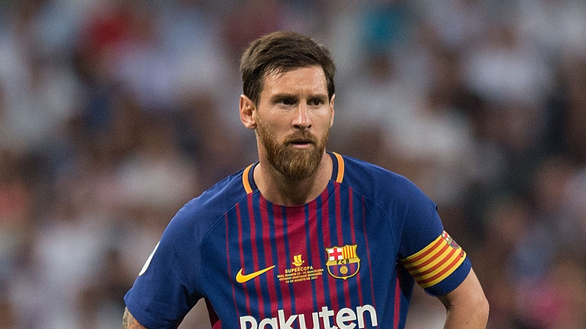

Lionel Messi

Lionel Andrés "Leo" Messi Cuccittini is an Argentine professional footballer who plays as a forward for Spanish club FC Barcelona and the Argentina national team. Often considered the best player in the world and regarded by many as the greatest of all time, Messi is the only player in history to win five FIFA Ballon d'Or awards, four of which he won consecutively, and a record-tying four European Golden Shoes. He has won 29 trophies with Barcelona, including eight La Liga titles, four UEFA Champions League titles, and five Copas del Rey.
Wikipedia